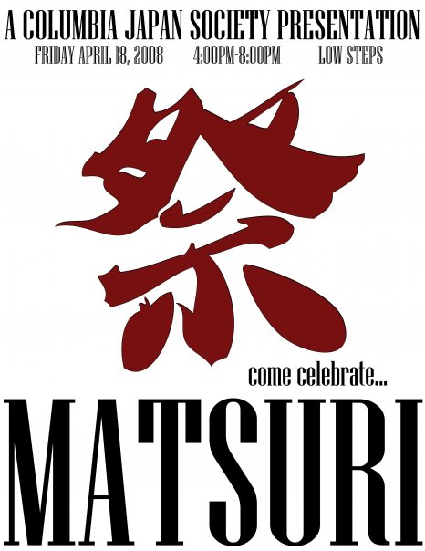
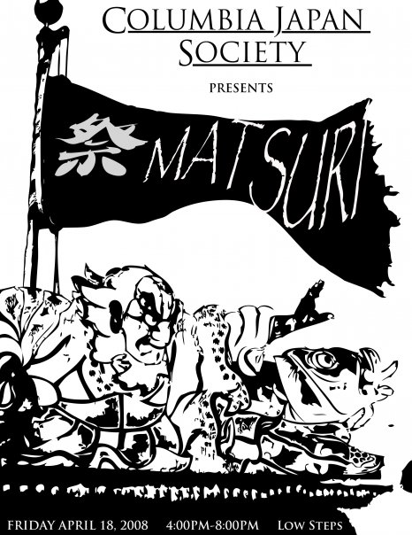
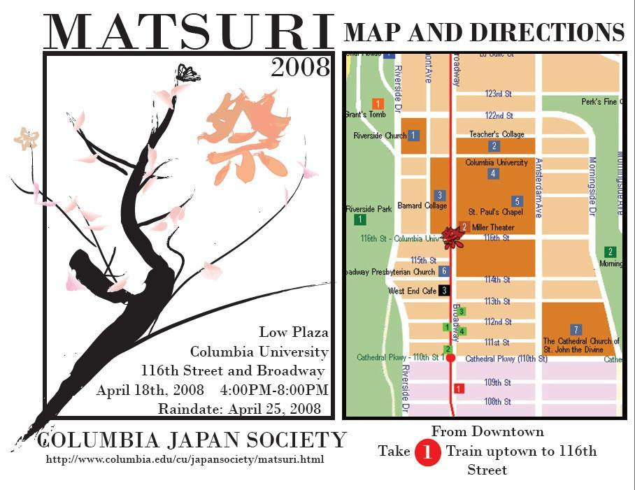

 
Date: Friday, April 18
Raindate: Friday, April 25
Time: 4:00 - 8:00 PM
Location: 116th St. and Broadway, Columbia University Low Plaza
Columbia Japan Society (CJS) of Columbia University in the City of New York (CU) will be holding its annual Japanese festival on the iconic Low Plaza!
In its 5th year running, CJS MATSURI has become an important tradition for the Columbia University community. This time, its scale in every respect is greater than ever before. Restaurants, corporations, student organizations, and perfomers from all over New York are coming, as well as groups from within Columbia University. The event is also being co-organized by the New York Japanese Student Association (NYJSA). CJS will be providing its very own entertainment on and off stage. Traditional festival attractions as goldfish scooping and shateki as well as wacky Japanese game show style stage performances. Also don't miss the gigantic curry eating competition where contestants will be competing to devour a 2kg platter of curry live!
In Japanese "omake" spirit, the event is totally free! There is no admission fee, event goods such as fans and booklets are free, games and performances are free, and even chances to win fantastic prizes as big as airline tickets are entirely free!
So come enjoy a wonderful afternoon with CJS at CJS MATSURI. You are guaranteed to have a cultural experience as well as some wacky, CJS fun!
Use the menu below to navigate through CJS MATSURI 2008!
